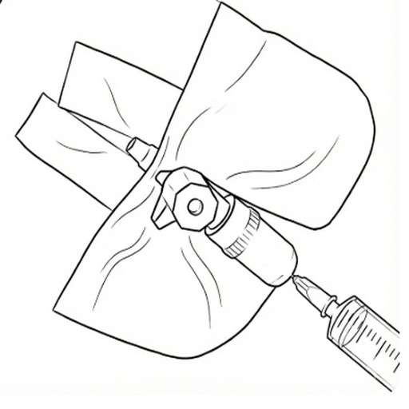

💉 Subcut Administration
Home Guide for Subcutaneous Injection
Safety Check
Do not inject. Call immediately if the port area is: Red, Swollen, Leaking Fluid, or Painful.
Preparation
Wash hands with soap and water, dry well. Check chart for medicine name, amount, and time since last dose.
- Syringe with needle
- Medicine ampoule
- Water for injection syringe (0.5ml)
- Alcohol wipes
- Sharps box
Injection Steps
Snap open ampoule (break at colored dot). Stick needle in, pull plunger to exact amount. Tap to remove bubbles, push plunger slightly to expel air.

Wipe port stopper with alcohol wipe, wait 30s. Push needle gently into port. Push plunger slowly until empty. Pull needle out straight away.
Push needle of water for injection syringe (0.5ml) into port, push slowly to rinse. Wipe port stopper with alcohol wipe. Record details on chart. Drop all sharps in box.
Subcutaneous Administration
Home Care Protocol
Safety Check
Do not inject if port is: Red, Swollen, Leaking Fluid, or Painful.
Preparation
Wash hands with soap. Check chart for right medicine, amount, and time.
- Syringe with needle
- Medicine ampoule
- Water for injection (0.5ml)
- Alcohol wipes & Sharps box
Administration Procedure
Snap ampoule. Draw exact amount. Tap to remove bubbles, push plunger slightly to expel air.
Wipe port stopper with alcohol wipe (wait 30s). Push needle in. Inject SLOWLY. Pull out straight away.
Rinse with water for injection (0.5ml). Wipe port stopper. Record time/amount. Dispose of sharps.